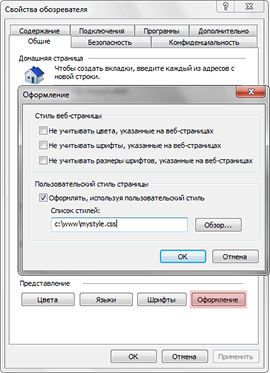
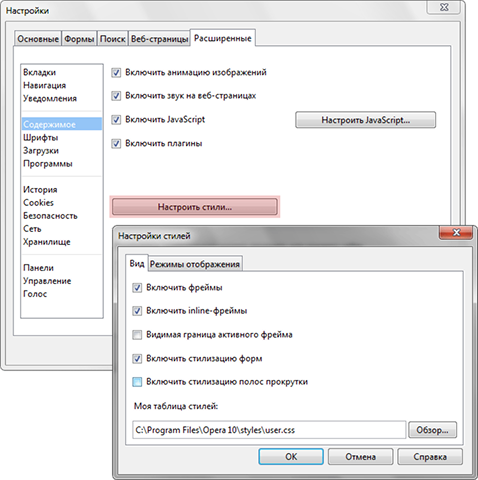

это правило, повышающее приоритет конкретного стиля, заставляя браузер игнорировать разногласия в стилях и использовать значение именно с !important
Примеры:
| Стиль Автора (CSS в <style> блоке) | Стиль Пользователя (CSS в <style> блоке) | Результат |
|---|---|---|
|
BODY {
background: #f2f2f2; color: gray; padding: 10px; border: 1px solid silver; } |
BODY {
background: #222; color: white; padding: 25px; border: 3px solid black; } |
Это пример текста
Объяснение:
Стили пользователя были подключены позже, поэтому браузер применил тёмный фон, белый текст, увеличенные отступы и чёрную рамку.
|
|
BODY {
color: silver; font-size: 12px; border: 1px solid gray; } |
BODY {
color: black !important; font-size: 18px; border: 4px dashed red !important; } |
Это пример текста
Объяснение:
Свойства color и border помечены как
!important, поэтому именно они были применены браузером.
|
|
BODY {
background: lightblue; font-size: 14px; border-radius: 0px; } |
BODY {
background: orange !important; font-size: 20px !important; border-radius: 20px; } |
Это пример текста
Объяснение:
Фон и размер текста получили повышенный приоритет через
!important, поэтому они переопределили стили автора.
|
|
BODY {
color: blue !important; background: #ddd !important; padding: 10px; } |
BODY {
color: darkred !important; background: pink !important; padding: 30px !important; } |
Это пример текста
Объяснение:
Оба набора правил используют
!important, но стили пользователя были объявлены позже и поэтому получили приоритет.
|
Стили пользователя можно подключать в браузере Internet Explorer и Opera:
Подключение стиля пользователя в Internet Explorer: Сервис > Свойство обозревателя > Оформление

Подключение стиля пользователя в Opera: Инструменты > Общие настройки > Вкладка «Расширенные» > Содержимое > Кнопка «Настроить стили»

Синтаксис:
Свойство: значение !important